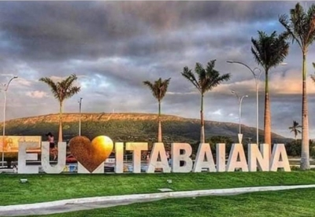

Itabaiana
História
Com a descoberta do Brasil, a Coroa Portuguesa, visando à colonização do novo continente, em 1534 dividiu-o em capitanias hereditárias, tendo o território sergipano sido dado a Francisco Pereira Coutinho. Com a morte deste, seu filho, Manoel Pereira Coutinho, fracassando na exploração das terras, vendeu sua capitania à Coroa Portuguesa, em 1549, permanecendo as terras sergipanas, ocupadas pelo elemento indígena. Em 1590 a expedição de Cristóvão de Barros liquida os indígenas e se inicia o processo de colonização de Sergipe.
Datam dessa época, as primeiras notícias de terras doadas a sete lavradores para colonizarem as cidades circunvizinhas do rio Sergipe. Através de sesmarias (terrenos que eram concedidos pelos reis de Portugal e pelas autoridades coloniais portuguesas às sesmeiros – colonos ou cultivadores), as terras não repartidas entre os colonos, oriundos de Portugal e da Bahia.
Por essa época é que se dá início propriamente dito, ao povoado e colonização de Itabaiana em grande escala, com a distribuição de imenso número de sesmarias de suas terras, notadamente aquelas situadas à margem do rio Jacarecica, os colonos contemplados com tais sesmarias, se espalhando em sítios pelas margens do rio, vão fundar o Arraial de Santo Antonio, a primeira povoação de Itabaiana, na região hoje conhecida por Igreja Velha, a uma légua do atual centro da cidade de Itabaiana, erguendo-se uma capela, fundando a Irmandade das Santas Almas. Esta capela é registrada no mapa de Caspar Barlaeus, durante a invasão holandesa, datado provavelmente de 1641, data em que os holandeses pesquisaram ouro na Serra de Itabaiana.
O local onde se encontra hoje a sede do município, conhecida no século XVI como Caatinga de Ayres da Rocha, era primitivamente um sítio de propriedade do pároco de São Cristóvão, Padre Sebastião Pedroso de Góes, que vendeu em 9 de julho de 1675, por Rs. 60$000(sessenta contos de réis), à Irmandade das almas de Itabaiana, sob a condição de nele ser reedificado um templo sob a invocação de Santo Antonio e Almas de Itabaiana. Segundo Sebrão Sobrinho, a intenção do Padre Sebastião era ver concretizada a criação da Freguesia de Santo Antonio e Almas de Itabaiana e para tanto, mister que se fazia que a igreja fosse edificada em terreno próprio. Como a capela de Santo Antonio estava edificada numa fazenda de propriedade particular, jamais a freguesia pôde ser criada.
Com a venda da caatinga de Ayres da Rocha à Irmandade, foi edificada a Igreja de Santo Antonio e Almas de Itabaiana, passando para este lugar, a sede da vila, que até então funcionava na Igreja Velha.
A povoação foi crescendo e já pelo ano de 1678, Itabaiana era distrito, possuindo paróquia desde outubro de 1675, permanecendo a invocação de Santo Antonio e Almas de Itabaiana. A paróquia de Itabaiana foi criada pelos governadores do Arcebispado, na ausência do Arcebispo D. Gaspar Barata de Mendonça.
fonte: https://itabaiana.se.gov.br/texto/1/historia-do-municipioPontos Turísticos
Serra de Itabaiana
O Parque Nacional da Serra de Itabaiana fica às margens da BR 235 e é o principal destino de Sergipe para quem gosta do ecoturismo, de trilhas e banho de cachoeira. Na entrada principal há um pórtico indicando o acesso ao parque. Uma estrada de piçarra conduz o visitante até a primeira atração: o Poço das Moças. Localizado no lado leste da Serra de Itabaiana, sem dúvidas, o poço é um dos locais mais procurados para o relaxamento e contato com a natureza.
Poço das Moças
O Poço das Moças é um poção de águas escuras propício ao banho, em meio a uma grande corredeira, é a primeira parada para o banho de quem adentra o parque pelo portão principal. Muitos visitantes escolhem passar o dia se banhando nas suas águas sem fazer caminhada ou outro tipo de ecoesporte.
Dados Gerais de acordo com o IBGE
| Prefeito (a) | Adaílton Resende Sousa |
| Vice-Prefeito (a) | Everton Carvalho da Cunha Filho |
| Site do município | https://itabaiana.se.gov.br/ |
| Área territorial | 337,295 km² |
| População estimada | 96.839 pessoas |
| Densidade demográfica | 258,30 hab/km² |
| IDHM | 0,642 |
| PIB per capita | R$ 21.036,18 |